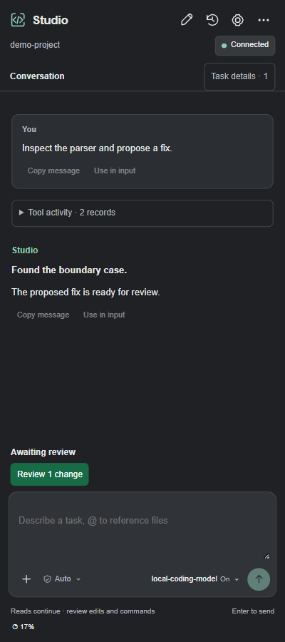
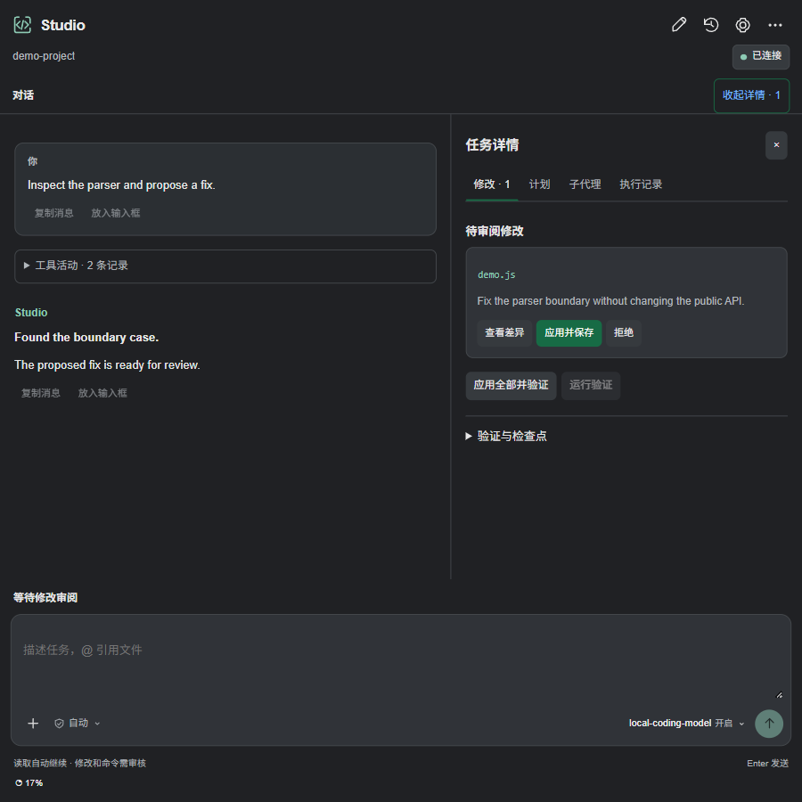
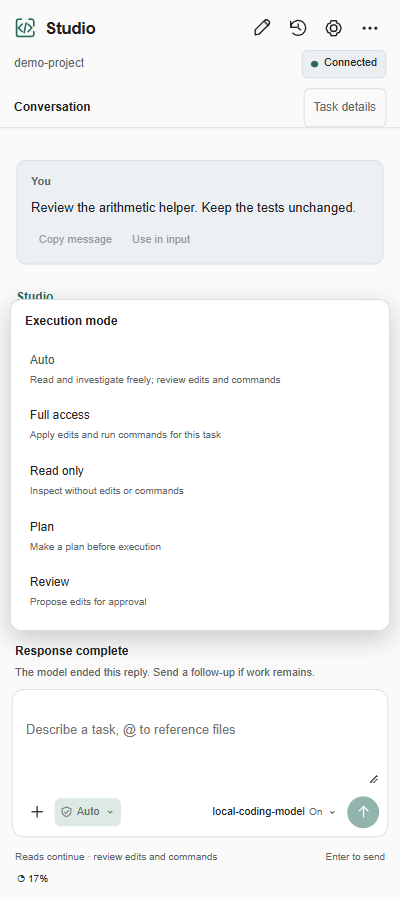
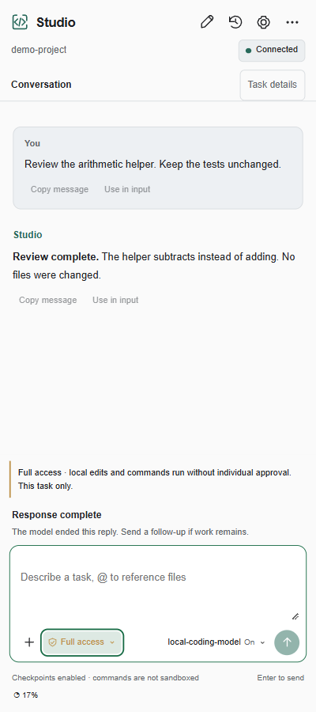

13 - Use Auto, Full Access and Context Compaction#
Time: 45 minutes. Version: Studio 0.14.1 preview. Updated: November 25, 2026. Requires: the disposable exercise from Lab 9 and a working model connection for the live drills.
Outcomes#
Choose an execution mode deliberately, find the controls in the new workbench, distinguish waiting from stopping, and explain when context compaction（上下文压缩） happens automatically. Run the same drills on Windows, Linux or macOS; inference still follows the connection route configured in Lab 9.
1. Find the right control#
Install the 0.14 kit from Lab 9, save work and reload VS Code. Open a new chat: its mode should read Auto（自动）. A restored older chat can retain Review, Plan or Read only; restoring Full access downgrades it to Auto.


Fig. 5 Actual 0.14 webview HTML/CSS/JavaScript rendered in a browser fixture. All conversation and change data are synthetic. This screenshot demonstrates the interface, not a live model result or native VS Code command execution.#
Intent |
Where to go |
|---|---|
Connect or diagnose the model |
Header connection button; gear → Set up connection / Run diagnostics |
Load a previous chat |
Header History icon; search, then select a conversation |
Attach context |
+, or type |
Change model/thinking |
Model chip beside Send; choose a supported thinking level |
Inspect proposed changes |
Review action above the input, or Task details → Changes |
See the plan and fixed constraints |
Task details → Plan |
Inspect or cancel a child investigation |
Task details → Subagents |
Inspect background command output |
Task details → Activity |
Inspect token information or compact |
Context percentage below the composer; Compact context |
See retained summary details |
Task details → Plan → Context summary |
At wide widths, Task details opens beside the conversation. At narrow sidebar widths it replaces the conversation area while leaving the composer available. Hide details returns to chat. Tool activity expands when you need the underlying records; message actions copy a reply or place it in the input.


Fig. 6 Wide layout, following VS Code’s Chinese display language. This uses the same renderer and synthetic fixture as the English capture.#


Fig. 7 Choose permissions beside the plus button. Auto is the new-chat default; Full access requires explicit consent.#
2. Prove the Auto boundary#
Auto is the default for new chats. Read, search, diagnostics and read-only child investigations can continue without plan approval. Edits remain proposals. Terminal commands require approval unless you already granted that exact command and directory for this task. Review keeps the same effect-approval boundary for compatibility.
Read math.cjs and math.test.cjs. Make a short progress plan and investigate the
bug. Propose the smallest fix, without changing tests. Wait for my file review.
Check these outcomes:
A progress plan in Auto does not pause reading for approval. Plan mode intentionally does.
The source file stays unchanged until you apply the proposed change.
Preview diff opens the actual VS Code diff. Apply only after checking the path and content.
Ask for
node math.test.cjs. Inspect the native command approval before allowing it.Record the real output; a model claim is not a passing test.
Acceptance: an unchanged file before review, a reviewed application, and an actual approved command result. An API timeout is a failed live drill, not evidence that the permission boundary failed.
3. Try Full access in a disposable project#
Full access（完全访问） is optional. It allows newly proposed local changes to apply through the checkpoint/conflict pipeline, and local terminal commands to run without individual prompts. It is not an OS sandbox: commands run with your system user’s permissions and may affect files or networks beyond the project.
Use a fresh fixture, not a personal repository. From the extracted kit:
# Windows PowerShell
python exercises/make_fixture.py studio-full-demo
code studio-full-demo
# Linux / macOS
python3 exercises/make_fixture.py studio-full-demo
code studio-full-demo
Open a new chat, choose the mode beside +, select Full access and read its consent dialog. The grant is scoped to this task/project. Then ask:
For this disposable exercise, I authorize applying the minimal fix to math.cjs
and running node math.test.cjs without another per-action review. Keep the
public API and existing tests unchanged. Inspect the file first, apply the
fix using the file tool, then report the actual test output and checkpoint.
Inspect Task details → Changes → Verification and checkpoints for the saved edit and Activity for the command result. A direct command result is execution evidence; it is not necessarily a completed named verification recipe.


Fig. 8 The renderer’s Full access notice. Selecting the mode in real VS Code first requires its native consent dialog; a screenshot cannot grant permission.#
Switch back to Auto. Request another harmless edit and verify it waits for review. Reload after saving work and restore the chat: Full access must not survive. New chats and branches do not inherit the grant either.
Boundary |
Full access behavior |
|---|---|
New local file proposals |
Auto-apply with checkpoints and conflict checks |
Local commands and enabled local hooks |
No individual prompt while the scoped grant remains valid; unsandboxed |
Previously pending proposals |
Still require review; enabling Full access does not apply the old queue |
Disabled file/command tools |
Stay disabled |
Read-only child agents |
Stay read-only; no commands or writes |
MCP writes and image generation |
Still require their separate approval |
Interrupted or unknown outcomes |
Inspect actual state before retrying; no blind replay |
Acceptance: one real applied edit, a checkpoint and executed test output; after switching to Auto, another edit waits. Do not publish a private chat export as evidence.
4. Read the status before pressing Continue#
The strip above the composer distinguishes context preparation, model waiting/thinking, tool execution, review and pause. A long first-token delay can be model loading, queueing or inference; it is not automatically a round-limit failure.
During execution, type a clarification and press Enter to guide the next safe tool boundary. This does not launch a second top-level task. Pause aborts the current foreground request and cancels child investigations. Background commands have their own stop controls in Activity.
If a run stops, read its reason before continuing. Main runs default to 48 model/tool rounds, not 48 individual tool calls. Several tools returned in one model response use one round. Continue starts another bounded run with saved context; it is not unlimited unattended execution. The latest substantive request is preserved separately so a generic Continue does not replace it with the original project-overview request.
An output-limit response gets at most one concise retry with lower supported thinking. Truncated tool calls are not executed. Other failures, repeated identical tool calls, unknown effects and exhausted limits can still stop the run.
5. Understand automatic compaction#
Yes: automatic compaction is independent of Auto permission mode. Version 0.14.1 adds both proactive checks and idle compaction (空闲压缩). With default settings:
contextTokens = 32,768
maxOutputTokens = 4,096
safety reserve = 1,024
input budget = 27,648
Before each main model request, Studio measures the messages and tool definitions. Direct API mode tries the server tokenizer by default; unavailable/unsupported counting or image-containing requests use a conservative estimate plus image reservation. The configured context capacity must reflect the actual serving configuration, not just a model’s advertised maximum.
At 75% of the available input budget (20,736 tokens with these defaults), Studio attempts semantic compaction before the hard limit:
Summarize older turns. A long active turn can also compact its older exchanges, retaining at least eight recent messages and never splitting tool calls from their results. An incremental pass starts after the previous saved summary.
Preserve pinned constraints separately, together with task state and the latest substantive user request. A very long request supplies a marked bounded excerpt; the original remains in local storage.
Re-measure. If needed, reduce long tool-result previews and older context while keeping call/result pairing. A single long active turn can need this trimming even when there is no older turn to summarize.
If semantic summarization fails, keep the previous summary and attempt bounded trimming. If the request still cannot fit, stop with a reason rather than send an oversized request.
The context percentage represents input relative to the reserved input budget, not the full model capacity. Full history on disk does not mean every token is sent on every call.
Configure early and idle compaction#
Open VS Code Settings, search macstudio compact, or edit your settings:
{
"macstudio.autoCompactPercent": 75,
"macstudio.idleCompactMinutes": 5,
"macstudio.idleCompactMinPercent": 50
}
The percentage uses available input budget, after output and safety reservation. Idle compaction requires a saved direct API key/connection, sufficient context, compressible history, and no active foreground operation, command or subagent. It never prompts for a key in the background. Typing in the Studio composer or invoking a Studio action cancels it; the prior summary and transcript stay intact. Set idle minutes to 0 to disable it. Failed or cancelled attempts are not repeatedly retried on the same history boundary; new conversation progress permits another attempt. The idle timer checks every 15 seconds, so five minutes is a minimum, not an exact deadline.
Read structured audit data without a line-reading loop#
A minified JSON record can occupy one very long line. Changing line ranges repeatedly does not reveal new records. In a disposable project, create audit-demo.json:
{"packet":[{"item_id":"A01","text":"Coffee with friends"},{"item_id":"A02","text":"Great place"}]}
Ask Studio:
Inspect audit-demo.json with local_read_json. Select /packet, offset 0,
limit 1. Review each record, advance using nextOffset, and report the
IDs covered, evidence quotes and unresolved cases. Do not review the UI.
A JSON Pointer (JSON 路径) such as /packet selects the array. Pages contain whole records; an oversized individual record explicitly asks for a narrower pointer. The tool follows the same project/sensitive-path policy and sees unsaved editor text. Read-only subagents have the same capability.
Studio detects identical results and already-covered line ranges. After repeated reads without new evidence it requests a substantive findings/coverage report; the last allowed round is also reserved for that report. This does not turn incomplete work into completed work. Large audits still benefit from small batches, persisted decisions and explicit coverage checks. Automated annotations must remain distinguishable from human judgments.
Manual drill#
Save the three constraints from Lab 12, complete at least two short turns, then use:
/compact
Inspect the summary and verify the pinned constraints remain verbatim. To request an extracted summary without a summarizing model call:
/compact extract
The context popover’s Compact context button requests semantic compaction. Studio 0.14 does not implement /compact <focus instructions> or /autocompact. Put persistent requirements in Fixed constraints instead.
Semantic summarization itself consumes model time/tokens. It uses off/low thinking when supported, at most 2,048 output tokens per batch and at most eight batches. It does not change the main model’s chosen thinking setting. A summary can omit details; re-read source evidence before acting on it.
Reproduce the automatic path without sending private data#
From the kit’s source/, after npm ci (npm.cmd ci on Windows):
node --test --test-name-pattern="compaction|repeated|JSON" test/controller.test.js test/compaction14.test.js
These controlled tests exercise early/idle compaction, cancellation, pair preservation, structured JSON pages and repeated-read recovery. They use synthetic model responses and are not live-provider validation. For a live drill, use only disposable text, observe the context meter and compaction notice, and record the actual result. Do not repeatedly paste huge content just to force a model call.
6. Compare the strategy with Claude Code#
The design direction is similar, but 0.14 is not feature-equivalent. Comparison checked against official documentation on November 25, 2026:
Mechanism |
Studio 0.14 |
Claude Code documentation |
|---|---|---|
Automatic compaction |
Pre-call budget check, reserved output and safety margin |
Automatic as context approaches its configured window |
Earlier threshold |
Configurable, default 75% of available input budget |
Configurable auto-compact window |
Manual compaction |
|
|
Idle compaction |
Default 5 minutes, at least 50% budget; no active commands/agents; cancellable |
Documented idle-compaction behavior/settings |
After compaction |
Task state, pinned constraints, latest request and loaded guidance; tool-result trimming when necessary |
Documented instruction/memory/skill reinjection and selected file re-reading |
Permission mode named Auto |
Read-only progress continues; file/command effects require review |
Uses an action classifier in addition to permission rules |
Sources: Claude Code context and compaction, auto-compact window configuration, and auto-mode configuration. Product behavior can change; this table describes the documented mechanisms, not an assertion about their private implementation.
Remaining differences include focused partial compaction and targeted file re-reading after summaries. The new early/idle controls align the broad workflow, not Claude Code’s private implementation or model quality.
Quiz: Does Auto mean compaction only runs in Auto mode? Answer: No. Permission mode controls effects; the context budget check runs independently.
Submission: mode chosen, observed permission boundary, actual test output, compaction type, retained constraints, and one clearly identified limitation. Use only synthetic screenshots and remove machine/account details.